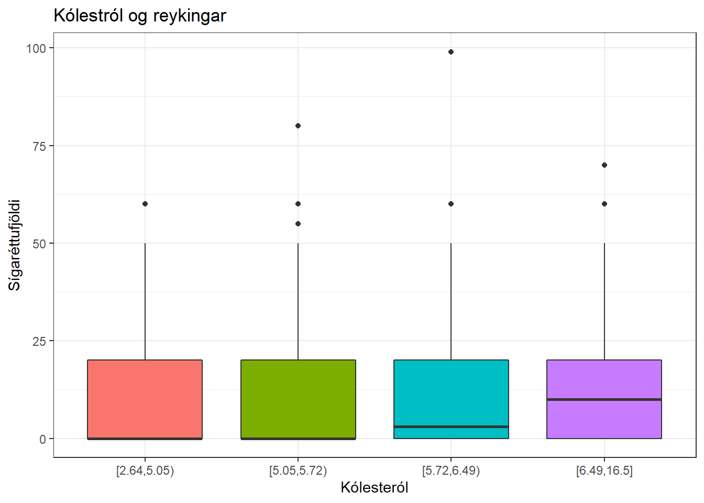

Tölfræði fyrir almenning
2020-08-17
Chapter 1 Línuleg aðhvarfsgreining
Í línulegri aðhvarfsgreiningu gildir að útkoman þarf að vera línuleg breyta. Það gildir ekki um skýribreyturnar.
Þeir pakkar sem við notum eru:
##
## Attaching package: 'epitools'## The following object is masked from 'package:survival':
##
## ratetable1.1 Lýsandi tölfræði
Western Collaborative Group Study (WCGS) gagnasafnið er í epitools- pakkanum. Gagnasafnið byggir á rannsókn sem var með meginmarkmið að skoða tengsl persónuleikagerðar og hjartasjúkdóma. Viðfangsefnin voru 3154 karlmenn á aldrinum 39 - 59 ára, þeim var fylgt eftir í allt að 10 ár þangað til þeir fengu hjartasjúkdóm, létust, þeir urðu 70 ára eða eftirfylgni lauk af öðrum ástæðum. Viðfangsefnin komu inn í rannsóknina á árunum 1960-1961. Í þessum kafla og næstu ætlum við að skoða tengsl kólesteróls og reykinga.
1.1.1 Sækjum gögnin og lögum til
data(wcgs)
wcgs <- as_tibble(wcgs)
wcgs <- wcgs %>%
mutate(agec = age0 - 46,
cholmmol = chol0 / 39,
sbp10 = sbp0 / 10,
dibpat = factor(dibpat0, levels = 0:1, labels = c("B", "A")),
smoker = factor(1 * (ncigs0 > 0), levels = c(0, 1), labels = c("No", "Yes")), # ATH, sé til hvort ég nota
bmi = (weight0 * 0.454) / ((height0 * 2.54)/100)^2,
bmiq3 = cut(bmi, breaks = quantile(bmi, seq(0, 1, 1/3)), # ATH, veit ekki hvort ég held þessu
include.lowest = T, right = F)
)
wcgs_dat <- wcgs %>%
select(id, agec, cholmmol, sbp10, ncigs0, dibpat, bmi, arcus0) %>%
filter(complete.cases(.))
wcgs_dat$dibpat <- relevel(wcgs_dat$dibpat, "A")Við búum til nýja aldursbreytu þar sem við erum búin að staðla hana m.v. meðaldurinn í hópnum. Meðalaldurinn er 46.28 og drögum við þvi 46 frá aldrinum. Það mun auðvelda túlkun á líkönum.
!!! ATH af hverju deilum við með 10 og 39?.
Breytan dibpat0 eru persónuleikagerðirnar, við setjum hana sem flokkabreytu (e. factor).
Til þess að reikna BMI þá þurfum við að breyta hæðinni í metra og þyngdinni í kíló. Útbúum einnig flokkabreytu fyrir bmi þar sem við skiptum henni í 3 jafna hluta.
Í þessari úrvinnslu notum við bara þá einstaklinga sem hafa allar breyturnar sem við ætlum að skoða, aðra fjarlægjum við úr gagnasafninu.
Gott er að setja “label” á breyturnar til að hafa íslensku í gröfum og öðrum myndum. Notum til þess skipunina \(label\) úr pakkanum \(arsenal\)
label(wcgs_dat$cholmmol) <- "Kólesteról"
label(wcgs_dat$agec) <- "Miðjaður Aldur"
label(wcgs_dat$bmi) <- "BMI"
label(wcgs_dat$dibpat) <- "Hegðunarhópur"
label(wcgs_dat$sbp10) <- "Blóðþrýstingur"
label(wcgs_dat$ncigs0) <- "Fjöldi sígaréttna"
label(wcgs_dat$arcus0) <- "Arcus" # ATH!!! Hvað er arcus?Mikilvægt skref í allri tölfræðiúrvinnslu er hreinsun gagnanna, t.d. skoða hvort öll gildi séu eðlileg. Við gerum það ekki hérna en við skoðum töflu 1, helstu lýsistærðir og dreifingu gagnanna.
1.1.2 Dreifing helstu breytna
Skoðum dreifingu þeirra breytna sem við höfum mestan áhuga á, það er kólesteról og reykingar. Gott getur verið að skoða skýribreyturnar á svipaðan hátt. Við gerð grafa notum við skipanir úr pakkanum \(tidyverse\), einnig notum við skipunina \(ggarrange\) úr pakkanum \(ggpubr\).
kol <- wcgs_dat %>%
ggplot(mapping = aes(x = cholmmol)) +
geom_bar(fill=4) +
ggtitle("Kólesteról") +
labs(x='Kólesteról', y='Count') +
theme_bw()
reyk <- wcgs_dat %>%
ggplot(mapping = aes(x = ncigs0)) +
geom_bar(fill=4) +
ggtitle("Reykingar") +
labs(x='Reykingar', y='Count') +
theme_bw()
ggarrange(kol, reyk,ncol=2, nrow=1) %>%
annotate_figure(
top = text_grob("Dreifing útkomu og útsetningar",face = "bold", size = 14))Oft er líka áhugavert að skoða hvernig fjórðungsmörkin eru fyrir breyturnar.
## 0% 25% 50% 75% 100%
## 2.641026 5.051282 5.717949 6.487179 16.538462## 0% 25% 50% 75% 100%
## 0 0 0 20 99Hérna sést t.d. að 50% karlmannanna er með kólesteról á bílinu 5.05 til 6.49. Einnig að langflestir reykja ekki, en 25% af karlmönnum reykja 20 sígaréttur eða meira.
1.1.3 Tafla 1
ATH!!! Vantar text um tilgang töflu 1. ATH!!! Myndum við vilja hafa aðra breytu efst. Í töflu 1 þá verður breytan sem er í hausnum að vera flokkabreyta, ef breytan sem við viljum skipta hópnum eftir er ekki flokkabreyta þá er hægt að útbúa hana með einhvers konar bilskiptingu. Hérna prófum við að skipta að kólestrólinu með fjórðungsmörkunum. Aðrar breytur geta verið hvort sem er flokkabreytur eða samfelldar.
wcgs_dat <- wcgs_dat %>%
mutate(chol_q = cut(cholmmol, breaks = quantile(cholmmol, seq(0, 1, 1/4)),
include.lowest = T, right = F))Til eru ýmsir skipanir til þess að gera töflu 1, sú sem við notum hérna er \(tableby\) úr pakkanum \(arsenal\)
tab_wcgs <- tableby(chol_q ~ ncigs0 + agec + bmi + dibpat + sbp10 + arcus0, data = wcgs_dat)
summary(tab_wcgs)| [2.64,5.05) (N=775) | [5.05,5.72) (N=776) | [5.72,6.49) (N=802) | [6.49,16.5] (N=787) | Total (N=3140) | p value | |
|---|---|---|---|---|---|---|
| Fjöldi sígaréttna | < 0.001 | |||||
| Mean (SD) | 9.819 (13.651) | 10.781 (14.433) | 12.399 (14.939) | 13.255 (14.679) | 11.577 (14.494) | |
| Range | 0.000 - 60.000 | 0.000 - 80.000 | 0.000 - 99.000 | 0.000 - 70.000 | 0.000 - 99.000 | |
| Miðjaður Aldur | < 0.001 | |||||
| Mean (SD) | -0.466 (5.360) | -0.179 (5.475) | 0.677 (5.528) | 1.041 (5.574) | 0.275 (5.517) | |
| Range | -7.000 - 13.000 | -7.000 - 13.000 | -7.000 - 13.000 | -7.000 - 13.000 | -7.000 - 13.000 | |
| BMI | < 0.001 | |||||
| Mean (SD) | 24.339 (2.697) | 24.333 (2.592) | 24.747 (2.526) | 24.730 (2.420) | 24.540 (2.567) | |
| Range | 11.202 - 38.986 | 15.676 - 37.267 | 16.889 - 35.763 | 17.737 - 35.735 | 11.202 - 38.986 | |
| Hegðunarhópur | 0.030 | |||||
| A | 359 (46.3%) | 387 (49.9%) | 416 (51.9%) | 421 (53.5%) | 1583 (50.4%) | |
| B | 416 (53.7%) | 389 (50.1%) | 386 (48.1%) | 366 (46.5%) | 1557 (49.6%) | |
| Blóðþrýstingur | < 0.001 | |||||
| Mean (SD) | 12.624 (1.430) | 12.726 (1.420) | 12.964 (1.540) | 13.120 (1.575) | 12.860 (1.506) | |
| Range | 9.800 - 21.000 | 10.000 - 21.200 | 10.000 - 20.800 | 10.000 - 23.000 | 9.800 - 23.000 | |
| Arcus | < 0.001 | |||||
| Mean (SD) | 0.226 (0.418) | 0.277 (0.448) | 0.323 (0.468) | 0.367 (0.482) | 0.299 (0.458) | |
| Range | 0.000 - 1.000 | 0.000 - 1.000 | 0.000 - 1.000 | 0.000 - 1.000 | 0.000 - 1.000 |
Ýmsar leiðir eru til að skoða gögnin frekar og ætlum við að sýna nokkur dæmi um það, en það er alls ekki tæmandi listi og oft gott að gera fyrir fleiri breytur en við gerum hérna.
Skoðum myndrænt meðaltal og staðalfrávik fjölda sígaréttna út frá kólestrólhópum. Það gerum við með “boxplotti”.
wcgs_dat %>%
ggplot(aes(x=as.factor(chol_q), y=ncigs0, fill=as.factor(chol_q))) +
geom_boxplot() +
labs(x='Kólesteról', y='Sígaréttufjöldi') +
ggtitle("Kólestról og reykingar") +
theme_bw() +
theme(legend.position="none") Við sjáum að meðaltal hækkar í seinni tveimur hópunum en staðalfrávikin virðast svipuð.
Stundum er gott að sjá hvort það séu einhver víxláhrif á milli breytna. Skoðum því hvort áhrif sígaréttna á kólestról sé eins hjá hegðunarhópunum tveimur. Hérna notum við upphaflegu samfelldu kólesteról breytuna en skiptum sígaréttureykingum í 3 flokka: Reykja ekki, 1 pakki, meira en einn pakki.
wcgs_dat <- wcgs_dat %>%
mutate(ncigs0_3 = ifelse(ncigs0 == 0, "Reyklaus",ifelse(ncigs0 <=20,"1 pakki","Meira")))
# Endurröðum
wcgs_dat$ncigs0_3 <- as.factor(wcgs_dat$ncigs0_3)
wcgs_dat$ncigs0_3 <- relevel(wcgs_dat$ncigs0_3,"1 pakki")
wcgs_dat$ncigs0_3 <- relevel(wcgs_dat$ncigs0_3,"Reyklaus")
wcgs_dat %>%
ggplot(fill=4) +
aes(x = ncigs0_3, color = dibpat, group = dibpat, y = cholmmol) +
labs(x='Fjöldi sígaréttna', y='Kólesteról') +
stat_summary(fun = mean, geom = "point") +
stat_summary(fun = mean, geom = "line") +
ggtitle("Kólesteról og reykingar") +
labs(color = "Hegðunarhópur") +
theme_bw() Sjáum að hóparnir tveir koma ekki alveg eins út. Um þá sem reykja ekki gildir að, þeir sem eru í hegðunarhópi A er kólesterólið mun hærra en þegar við skoðum þá sem reykja 1 pakka á dag eða minna þá minnkar munurinn. Svo frá einum pakka og yfir í meira þá stendur hópur B í stað en hópur A hækkar og bilið á milli þeirra eykst. Svo víxláhrif virðast til staðar.
Sjáum að hóparnir tveir koma ekki alveg eins út. Um þá sem reykja ekki gildir að, þeir sem eru í hegðunarhópi A er kólesterólið mun hærra en þegar við skoðum þá sem reykja 1 pakka á dag eða minna þá minnkar munurinn. Svo frá einum pakka og yfir í meira þá stendur hópur B í stað en hópur A hækkar og bilið á milli þeirra eykst. Svo víxláhrif virðast til staðar.